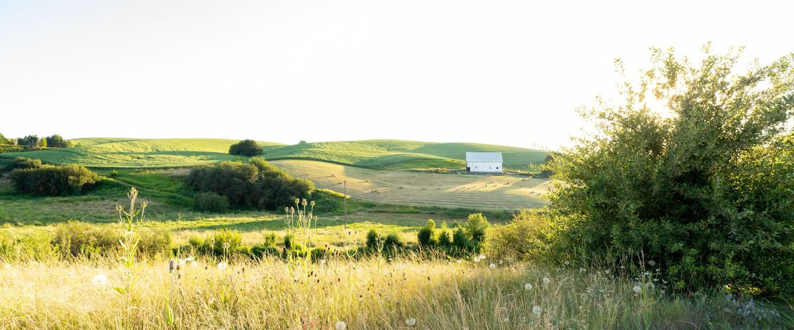
Frost dates and planting calendar
Davenport, WA
The typical last spring frost in Davenport is June 6, and the first fall frost is around September 11. Plant peas from Apr 25; plant tomatoes from Jun 6.
Pictured: Wheat fields near Pullman, Washington
USDA hardiness zone 6bColdest winter night: usually −5 to 0°F. Source: 2023 USDA Plant Hardiness Zone Map.
NOAA 1991–2020 frost normals, Davenport station. Where these dates come from
About Davenport
Davenport is the county seat of Lincoln County, west of Spokane, in wheat-growing country. Its weather station records a short frost-free season, so gardens here need quick-maturing varieties.
Chance of frost through the year
Frost over in 9 years out of 10: after Jul 5
Tomatoes go out Jun 6 – Jul 4, under frost cover at first
- Very likely
- Likely
- Possible
- Unlikely
In 9 years out of 10, the last spring frost has passed by Jul 5 and the first fall frost holds off until Aug 26.
What to plant now
Turn on JavaScript to see what's in season today. The full calendar is below.
Make a garden plan for Davenport Pick your plants and get a dated, printable to-do list.
Inland Northwest. Spokane, Ellensburg, the Okanogan, La Grande, north Idaho, the Magic Valley, eastern Idaho and other higher, colder interior valleys. Cold springs and an earlier fall mean a shorter season; quick-maturing varieties pay off.
Gardening in Spokane and eastern Washington. Winters are cold, the season is shorter than west of the Cascades, and summers are warm and dry. Quick-maturing varieties pay off, and gardens need watering through the summer.
How the season in Davenport compares
With 97 frost-free days, Davenport has the 112th-longest season of the 116 Oregon, Washington and Idaho towns we cover. They run from 72 days in McCall to 330 days in Brookings and Gold Beach.
The typical last frost here, June 6, is the latest of the towns we cover in Spokane and eastern Washington: 41 days later than Spokane and 15 days later than Deer Park.
Late frosts are harder to predict here than in most towns. There are 29 days between the typical last frost and the date it's over in 9 years out of 10, against 19 for a typical town on this site, so keep frost cover handy until July 5.
The season is too short for winter squash, sweet potatoes and pumpkins to finish from a normal planting date. Grow short-season varieties, start them indoors early, or use a cold frame or row cover to buy time. Sweet corn, peppers, dahlias, eggplant, melons, sunflowers, zinnias and cosmos also need most of the season.
Rain and warmth in Davenport
The wettest month is December (1.9 in) and the driest is August (0.3 in). June to August bring 1.9 in, 13% of the year's total, so plan to water through summer.
Summers here are cool (100th of 116 towns for summer heat). Tomatoes, peppers and melons ripen slowly, so pick early varieties and your warmest, sunniest spot.
Source: NOAA 1991–2020 climate normals, Davenport station.
Planting calendar
Pick a group to see when each plant goes in, or search for one.
- Frost likely
- Frost possible
- Frost-free
Salad greens 7 plants
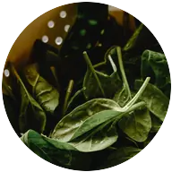
SpinachPlant seeds in the ground- Plant Apr 25 – May 30
- Again for fall Jul 17 – Aug 7
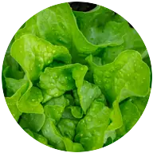
LettucePlant seeds or young plants- Indoors Mar 14–28
- Plant Apr 25 – Jun 20
- Again for fall Jul 17–31
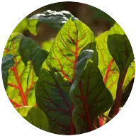
Swiss chardPlant seeds in the ground- Plant May 9 – Jul 4
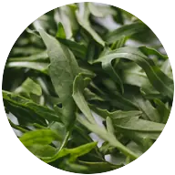
ArugulaPlant seeds in the ground- Plant Apr 25 – Jun 6
- Again for fall Jul 24 – Aug 14
- CeleryPlant young plants (starts)
- Indoors Mar 28 – Apr 11
- Plant Jun 6 – Jul 11
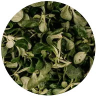
MâchePlant seeds in the ground- Plant Apr 25 – May 30
- Again for fall Jul 10 – Aug 14
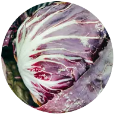
RadicchioPlant seeds or young plants- Indoors Mar 28 – Apr 11
- Plant May 9 – Jun 13
Cabbage family 9 plants
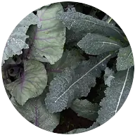
KalePlant young plants (starts)- Indoors Mar 28 – Apr 11
- Plant May 9 – Jun 20
- BroccoliPlant young plants (starts)
- Indoors Mar 21 – Apr 4
- Plant May 9 – Jun 13
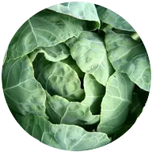
CabbagePlant young plants (starts)- Indoors Mar 21 – Apr 4
- Plant May 9 – Jun 13
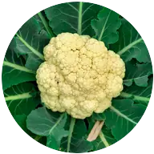
CauliflowerPlant young plants (starts)- Indoors Mar 21 – Apr 4
- Plant May 9 – Jun 6
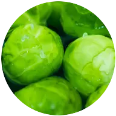
Brussels sproutsPlant young plants (starts)- Indoors Mar 14–28
- Plant May 9 – Jun 20
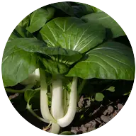
Bok choyPlant seeds or young plants- Indoors Mar 21 – Apr 4
- Plant Apr 25 – May 30
- Again for fall Jul 17–31
- KohlrabiPlant seeds or young plants
- Indoors Mar 28 – Apr 11
- Plant May 9 – Jun 20
- Again for fall Jul 10–24
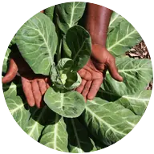
CollardsPlant young plants (starts)- Indoors Mar 28 – Apr 11
- Plant May 9 – Jun 20
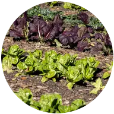
Mustard greensPlant seeds in the ground- Plant Apr 25 – Jun 6
- Again for fall Jul 17 – Aug 7
Root vegetables 7 plants
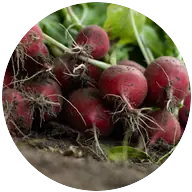
RadishesPlant seeds in the ground- Plant Apr 25 – Jun 20
- Again for fall Jul 31 – Aug 14
- CarrotsPlant seeds in the ground
- Plant May 9 – Jul 4
- BeetsPlant seeds in the ground
- Plant May 9 – Jul 4
- PotatoesPlant seed potatoes
- Plant May 9 – Jun 20
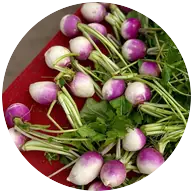
TurnipsPlant seeds in the ground- Plant Apr 25 – Jun 6
- Again for fall Jul 10–24
- ParsnipsPlant seeds in the ground
- Plant May 9 – Jun 20
- Sweet potatoesPlant rooted cuttings (slips)
- Plant Jun 13 – Jul 4
Short season here: use transplants, a fast variety and row cover.
Onion family 4 plants
Peas and beans 4 plants
Bush beans and pole beans go in before frost is over. If a frost is forecast before Jul 5, cover them.
- PeasPlant seeds in the ground
- Plant Apr 25 – Jun 6
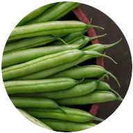
Bush beansPlant seeds in the ground- Plant Jun 13 – Jul 25
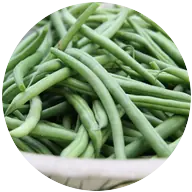
Pole beansPlant seeds in the ground- Plant Jun 13 – Jul 18
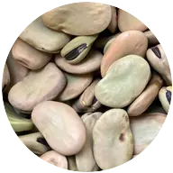
Fava beansPlant seeds in the ground- Plant Apr 25 – May 30
Tomatoes and summer crops 6 plants
Tomatoes, tomatillos and ground cherries go in before frost is over. If a frost is forecast before Jul 5, cover them.
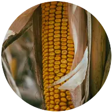
Sweet cornPlant seeds in the ground- Plant Jun 13 – Jul 18
Tight season: choose an early variety.
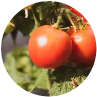
TomatoesPlant young plants (starts)- Indoors Apr 11–25
- Plant Jun 6 – Jul 4
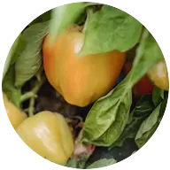
PeppersPlant young plants (starts)- Indoors Apr 4–18
- Plant Jun 13 – Jul 4
Tight season: choose an early variety.
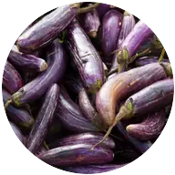
EggplantPlant young plants (starts)- Indoors Apr 4–18
- Plant Jun 13 – Jul 4
Tight season: choose an early variety.
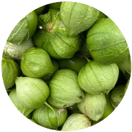
TomatillosPlant young plants (starts)- Indoors Apr 11–25
- Plant Jun 6 – Jul 4
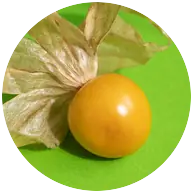
Ground cherriesPlant young plants (starts)- Indoors Apr 18 – May 2
- Plant Jun 6 – Jul 4
Squash, cucumbers and melons 5 plants
Cucumbers and zucchini and summer squash go in before frost is over. If a frost is forecast before Jul 5, cover them.
- CucumbersPlant seeds or young plants
- Indoors May 9–16
- Plant Jun 6 – Jul 4
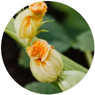
Zucchini and summer squashPlant seeds or young plants- Indoors May 9–16
- Plant Jun 6 – Jul 4
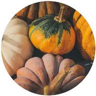
Winter squashPlant seeds or young plants- Indoors May 9–16
- Plant Jun 6–27
Short season here: use transplants, a fast variety and row cover.
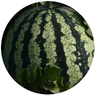
MelonsPlant seeds or young plants- Indoors May 16–23
- Plant Jun 13 – Jul 4
Tight season: choose an early variety.
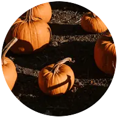
PumpkinsPlant seeds or young plants- Indoors May 9–16
- Plant Jun 6–27
Short season here: use transplants, a fast variety and row cover.
Herbs 13 plants
Basil goes in before frost is over. If a frost is forecast before Jul 5, cover it.
- BasilPlant young plants (starts)
- Indoors May 2–16
- Plant Jun 13 – Jul 11
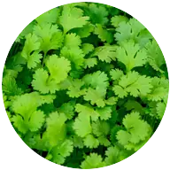
CilantroPlant seeds in the ground- Plant Apr 25 – Jun 13
- Again for fall Jul 24 – Aug 7
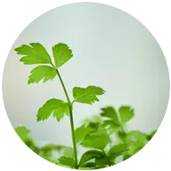
ParsleyPlant seeds or young plants- Indoors Mar 14–28
- Plant May 9 – Jun 27
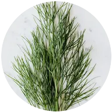
DillPlant seeds in the ground- Plant May 9 – Jul 11
- ChivesPlant seeds or young plants
- Indoors Mar 14–28
- Plant May 9 – Jul 4
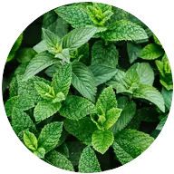
MintPlant young plants- Plant May 9 – Jul 4
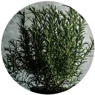
RosemaryPlant young plants- Plant May 9 – Jun 27
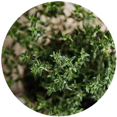
ThymePlant young plants- Plant May 9 – Jul 4
- OreganoPlant young plants
- Plant May 9 – Jul 4
- LavenderPlant young plants
- Plant May 9 – Jul 4
- SagePlant young plants
- Plant May 9 – Jul 4
- Lemon balmPlant young plants
- Plant May 9 – Jul 4
- TarragonPlant young plants
- Plant May 9 – Jul 4
Berries 10 plants
- StrawberriesPlant young plants
- Plant May 9 – Jun 20
- BlueberriesPlant potted or bare-root bushes
- Plant May 9 – Jun 27
- RaspberriesPlant bare-root canes
- Plant May 9 – Jun 20
- BlackberriesPlant bare-root or potted canes
- Plant Apr 25 – Jun 13
- GrapesPlant bare-root or potted vines
- Plant Apr 25 – Jun 20
- Hardy kiwiPlant potted vines
- Plant May 9 – Jun 27
- HoneyberriesPlant potted bushes
- Plant Apr 25 – Jun 20
- CurrantsPlant bare-root or potted bushes
- Plant Apr 25 – Jun 20
- GooseberriesPlant bare-root or potted bushes
- Plant Apr 25 – Jun 20
- ElderberriesPlant bare-root or potted shrubs
- Plant Apr 25 – Jun 20
Perennial vegetables 5 plants
- AsparagusPlant dormant crowns
- Plant May 9 – Jun 20
- RhubarbPlant dormant crowns
- Plant Apr 25 – Jun 6
- ArtichokesPlant young plants (starts)
- Plant May 9 – Jun 20
- SorrelPlant seeds or young plants
- Plant Apr 25 – Jun 20
- HorseradishPlant root cuttings
- Plant Apr 25 – Jun 6
Fruit and nut trees 11 plants
- Apple treesPlant bare-root or potted trees
- Plant Apr 25 – Jun 20
- Pear treesPlant bare-root or potted trees
- Plant Apr 25 – Jun 20
- Plum treesPlant bare-root or potted trees
- Plant Apr 25 – Jun 20
- Cherry treesPlant bare-root or potted trees
- Plant Apr 25 – Jun 20
- Fig treesPlant potted trees
- Plant May 9 – Jul 4
- Peach treesPlant bare-root or potted trees
- Plant Apr 25 – Jun 20
- Hazelnut treesPlant bare-root or potted trees
- Plant Apr 25 – Jun 20
- Persimmon treesPlant bare-root or potted trees
- Plant Apr 25 – Jun 20
- Asian pear treesPlant bare-root or potted trees
- Plant Apr 25 – Jun 20
- Quince treesPlant bare-root or potted trees
- Plant Apr 25 – Jun 20
- Mulberry treesPlant bare-root or potted trees
- Plant Apr 25 – Jun 20
Native plants 15 plants
- HuckleberriesPlant potted shrubs
- Plant Apr 25 – Jun 20
- Oregon grapePlant potted shrubs
- Plant Apr 25 – Jun 20
- Red-flowering currantPlant potted shrubs
- Plant Apr 25 – Jun 20
- ServiceberryPlant bare-root or potted shrubs
- Plant Apr 25 – Jun 20
- CamasPlant bulbs
- Fall Sep 25 – Oct 31
- ThimbleberryPlant bare-root or potted plants
- Plant Apr 25 – Jun 20
- SalmonberryPlant bare-root or potted shrubs
- Plant Apr 25 – Jun 20
- SalalPlant potted shrubs
- Plant Apr 25 – Jun 20
- KinnikinnickPlant potted plants
- Plant Apr 25 – Jun 20
- Western columbinePlant potted plants or seeds
- Plant Apr 25 – Jun 20
- Douglas asterPlant potted plants
- Plant Apr 25 – Jun 20
- Oregon sunshinePlant potted plants or seeds
- Plant Apr 25 – Jun 20
- Pacific ninebarkPlant bare-root or potted shrubs
- Plant Apr 25 – Jun 20
- Sword fernPlant potted plants
- Plant Apr 25 – Jun 20
- Oregon irisPlant potted plants or divisions
- Plant Apr 25 – Jun 20
Flowers 13 plants
Nasturtiums and marigolds go in before frost is over. If a frost is forecast before Jul 5, cover them.
- DahliasPlant tubers
- Plant Jun 6 – Jul 4
Tight season: choose an early variety.
- SunflowersPlant seeds in the ground
- Plant Jun 13 – Jul 25
Tight season: choose an early variety.
- Sweet peasPlant seeds in the ground
- Plant Apr 25 – May 30
- TulipsPlant bulbs
- Fall Sep 25 – Oct 31
- DaffodilsPlant bulbs
- Fall Sep 25 – Oct 31
- ZinniasPlant seeds in the ground
- Plant Jun 13 – Jul 25
Tight season: choose an early variety.
- PeoniesPlant bare-root divisions
- Fall Sep 25 – Oct 31
- CosmosPlant seeds or young plants
- Indoors May 2–16
- Plant Jun 13 – Jul 25
Tight season: choose an early variety.
- NasturtiumsPlant seeds in the ground
- Plant Jun 13 – Jul 25
- MarigoldsPlant seeds or young plants
- Indoors Apr 25 – May 9
- Plant Jun 6 – Jul 11
- CalendulaPlant seeds in the ground
- Plant May 9 – Jun 27
- RanunculusPlant soaked corms
- Plant May 9 – Jun 13
- SnapdragonsPlant seeds or young plants
- Indoors Feb 28 – Mar 14
- Plant May 9 – Jun 20
- Start seeds indoors
- Plant in the garden
- Plant again for fall
- Today
New to this? Read the beginner's guide or look up a term in the glossary.
ZIP codes that use these dates: 99122. Look up another ZIP.
Where these dates come from
The frost dates for Davenport come from the NOAA weather station in Davenport, at 2,420 feet. It's the closest weather station to Davenport with NOAA's 1991–2020 frost records.
Source: NOAA 1991–2020 climate normals. How we pick each town's station.
Common questions about frost in Davenport
When is the last frost in Davenport?
June 6 in a typical year, and frost is over by July 5 in 9 years out of 10. Peas and other cool crops don't need to wait for it: peas can go in from April 25. Tomatoes, beans and squash wait longer than the frost date, until the soil warms (see the tomato question below).
When is the first frost in Davenport?
Around September 11 in a typical year, and as early as August 26 in 1 year out of 10. From about Aug 26 on, watch the forecast and pick or cover tomatoes, peppers, squash and basil before a cold night. Kale, carrots, leeks and cabbage handle a light frost fine and keep going.
When can I plant tomatoes in Davenport?
Set out tomato plants Jun 6 – Jul 4. Wait for soil around 60°F and nights near 50°F; tomatoes stall in cold soil. To grow your own from seed, start them indoors Apr 11–25, or buy young plants at planting time. Keep frost cover handy until about Jul 5. The season is short here, so pick an early variety (under 70 days).
When should I plant garlic in Davenport?
Plant garlic cloves Sep 25 – Oct 31, pointy end up, in a sunny bed. The cloves need a winter of cold to split into a full bulb, which is why fall planting works and spring planting often gives one small round bulb. Dig the next summer, once the lower leaves have turned brown.
What growing zone is Davenport in?
USDA hardiness zone 6b, on the 2023 USDA map: the coldest winter night is usually −5 to 0°F. The zone tells you which perennials, shrubs and trees survive the winter. For vegetables it matters much less: go by the frost dates and planting calendar on this page instead.
How long is the growing season in Davenport?
About 97 frost-free days, from June 6 to September 11 in a typical year. That's one of the shortest of the 116 Oregon, Washington and Idaho towns we cover. 10 plants on the calendar get a second planting for fall here, including radishes, spinach and lettuce.
How much rain does Davenport get?
About 14 inches a year, counting melted snow. December is the wettest month and August the driest. That's dry country, so plan to water all summer; June to August brings just 1.9 inches. Figures are NOAA 1991–2020 normals.
Nearby areas with similar weather
| Town | Last frost | Frost-free days | Rain a year |
|---|---|---|---|
| Davenport | Jun 6 | 97 | 14 in |
| Spokane | Apr 26 | 169 | 16 in |
| Pullman | Apr 29 | 156 | 18 in |
| Colville | May 2 | 153 | 20 in |
| Ritzville | May 7 | 156 | 13 in |
Typical dates and yearly rain, NOAA 1991–2020 normals. More nearby: Newport, WA · Chewelah, WA.